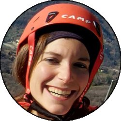
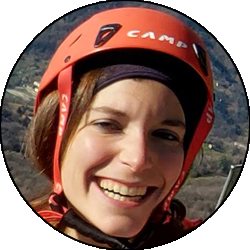

Dal paese di Baunei seguire le indicazioni per l'altopiano del Golgo, che si raggiunge dopo una manciata di tornanti stretti. Proseguire sulla comoda strada in leggera discesa fino al primo di due tornanti, dove si prende la strada carrareccia sulla destra, prendendo poi a destra a un altro bivio raggiungendo su strada dissestata (obbligatorio fuoristrada) fino all'ovile di Us Piggius. Il punto di partenza del Selvaggio Blu originale è Pedra Longa, raggiungibile su comoda strada dalla strada tra Baunei e Santa Maria Navarrese.
Qua descriverò sommariamente il "nostro" Selvaggio Blu, visto che abbiamo dovuto (e voluto) fare dei piccoli cambiamenti rispetto al Selvaggio Blu originale. Se si volesse percorrere il trekking senza guida (come abbiamo fatto noi) la parte di preparazione e studio dell'itinerario è vitale. Consiglio inoltre di appoggiarsi a una delle esistenti cooperative per quanto riguarda quantomeno le consegne del cibo e dell'acqua, che è totalmente assente su tutto il percorso; per fare il Selvaggio Blu in completa autonomia bisogna essere estremamente organizzati e preparati: noi abbiamo usato in 4 circa 30L d'acqua ogni giorno, tra bere, cucinare e lavarsi! Noi ci siamo appoggiati al Rifugio Cooperativa Goloritzè che opera sull'altopiano del Golgo, sono molto simpatici e gentili oltre a conoscere tutto il percorso come le loro tasche (e possono darvi diversi consigli). Il cambio principale è stato riguardante la prima tappa: poichè il forte vento di maestrale non consentiva la consegna via mare delle provviste, siamo dovuti partire un po' oltre l'inizio classico di Pedra Longa, per essere in grado di raggiungere l'altopiano di Genn 'e Mudregu per la sera.
Prima tappa (Us Piggius - Genn 'e Mudregu): si percorre l'altopiano in direzione Nord-Est, passando nei pressi della Punta Giradili (deviazione consigliata, stupendo panorama dalla cima), e si aggira il Monte Ginnirco sul suo versante Est. Questo tratto è abbastanza da intuire poichè il segnavia si perde spesso, cercare i radi ometti e i segni di passaggio. Un cancello permette poi di immettersi in un ghiaione che scende verso il mare, e traversando tra boschi, pietraie e macchia mediterranea si giunge nel Bacu Tenadili, dove per uscire bisogna indivudare un passaggio sulle roccette verso Nord attrezzato con corda fissa in traverso da sinistra verso destra. Superato questo tratto le difficoltà diminuiscono, e si scende tralasciando il capo di Monte Santo fino a Porto Pedrosu, dove un bagno è d'obbligo. Ripartiti, si supera dopo un po' di sentiero l'insenatura di Portu Cuau, per poi proseguire a mezza costa tra qualche saliscendi fino a una bellissima cengia panoramica dove si vede praticamente tutto il resto del percorso, verso Nord. Rientrati in traverso verso il Bacu Sunnuli, si risale quest'ultimo per qualche decina di metri fino a individuare dopo una grotta arancione un passaggio sulla destra che consente di raggiungere il Cuile Fenos Trainos, dove inizia l'ultima parte in salita. Qui abbiamo lasciato a destra, sotto consiglio dei ragazzi della cooperativa, il Selvaggio Blu originale, per proseguire dritti in un bel bosco fresco fino a raggiungere l'altopiano di Genn 'e Mudregu.
Seconda tappa (Genn 'e Mudregu - Su Tasaru): si procede facilmente verso Nord, raggiungendo in breve Punta Salinas, fantastico balcone su Cala Goloritzè e sicuramente punto più fotografato di tutto il Selvaggio Blu. Da qui si torna sui propri passi per poi scendere verso destra, tra pietraia e bosco, raggiungendo il sentiero che scende a Cala Goloritzè, dove un bagno è d'obbligo. Dopo un tentativo infruttuoso di imboccare il sentiero basso per Cala Mariolu, siamo tornati sui nostri passi e siamo saliti per il Bacu Boladina, che presenta un tratto centrale di circa 50/100m davvero orrido, dove non muovere sassi in testa a chi ci segue è impossibile: prestare attenzione e salire uno per volta; il tratto comunque è breve ed è attrezzato con corde fisse e catene. Usciti dal canale il percorso si fa più semplice, fino all'altopiano di Su Tasaru; noi visto che avevam fatto presto abbiamo deciso di fare una sgambata fino a Cala Mariolu, seguendo il sentiero che prima si alza e poi scende tra roccette, scale di legno e tantissimi tornanti fino alla bellissima cala. Considerare che ci vogliono tra le 2 e le 3 ore per questo excursus, oltre al fatto che tornare a Su Tasaru aggiunge 500m buoni di dislivello.
Terza tappa (Su Tasaru - Bacu Padente): si parte sul sentiero per Cala Mariolu, che viene poi lasciato a destra seguendo un lungo crestone erboso che dopo un po' porta a Punta Mudaloru, altro bel balcone panoramico. Da qui si torna sui propri passi e si scende a destra, prima su sentiero abbastanza comodo, poi presso una vaga forcella (individuare un cancello) si prende una pietraia che scende più diretta verso il mare, che si segue lungamente con poi alcuni passaggi che costeggiano le rocce verso sinistra. Qui bisogna indivudare un sentiero che porta fino a una calata da 17m sul bordo destro (Est) dei grottoni di Mudaloru; noi ci siamo sbagliati, ma è stato un errore ben accolto perchè così facendo (siamo stati più a sinistra) si individua un pulpito dove una calata (catena su albero) da 50m nel vuoto, molto emozionante, porta direttamente nei grottoni di Mudaloru. Da qui proseguire verso Nord (sinistra faccia al mare) senza più difficoltà troppo rilevanti, e stare alti su una cengia che permette di immettersi nel bacu che porta a Cala Mudaloru, dove si può fare un bellissimo bagno in tranquillità. Ripreso il sentiero, si sale un ghiaione fino a degli ometti che permettono di andare verso destra, e salendo un po' nel bosco (attenzione a non perdere la traccia) si costeggia il lato Est del Bruncu e S'Abba, per poi con due calate da max 25m portarsi sopra alla Grotta del Fico, la quale bisogna ignorare se non si ha il permesso di scendervi (cartelli che lo specificano). Si prosegue con un tratto che aggira un arco e qualche passaggino esposto fino a entrare nel Bacu Padente, che si risale fino al campo; noi prima di arrivare il campo siamo scesi sulla destra a una bellissima caletta senza nome, prestare attenzione perchè i passaggi non sono banali e il terreno non è sempre solido, ma è un excursus consigliato a chi ne avesse tempo, per un ultimo bagno.
Quarta tappa (Bacu Padente - Pranu 'e Murta'): dal Bacu Padente si segue la carrareccia verso Sud fino a Ololbissi, dove si segue il sentiero di Cala Biriala per qualche chilometro. Quando il sentiero per la cala vira verso destra proseguire dritti, cercando i passaggi migliori fino a Sa Nurca, impressionante spaccatura nella roccia che si nota solo quando si è nei pressi. Oltrepassata quest'ultima, ed effettuate due calate da max 45m, si prosegue lungamente nel bosco in direzione Nord, con qualche suggestivo tratto sotto dei grossi grottoni, e proseguendo ancora si giunge fino a una larga frana caduta nel 2015, che può dare qualche grattacapo di orientamento. Bisogna seguire degli ometti nel centro della frana, fino a giungere al suo bordo Nord, dove non bisogna risalire ma prendere una traccia poco visibile leggermente sulla destra, dove il sentiero prosegue fino alle ultime due calate (anche qui max 45m), che consentono di raggiungere l'ultimo tratto di bosco che in breve permette di raggiungere Cala Sisine, dove finiscono le difficoltà e il bagno è d'obbligo. Da qui per raggiungere Pranu 'e Murta è sufficiente risalire il largo vallone dietro la cala, tenendo la sinistra a un bivio, e su comoda carrareccia si raggiunge la stanga verde dove si trova il parcheggio.


 Mike,
Mike,
 Oracolo,
 Silvia
Oracolo,
 Silvia